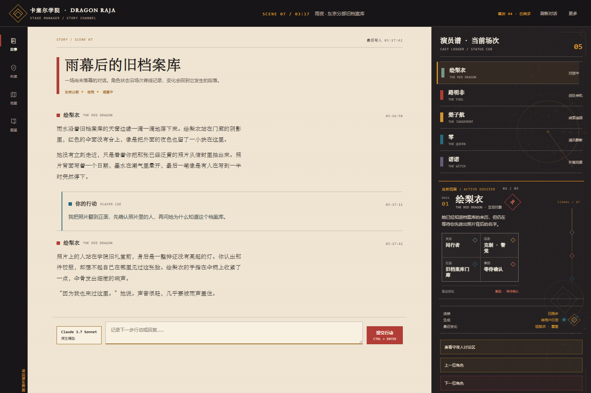
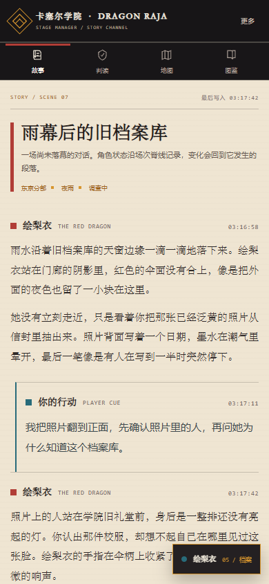
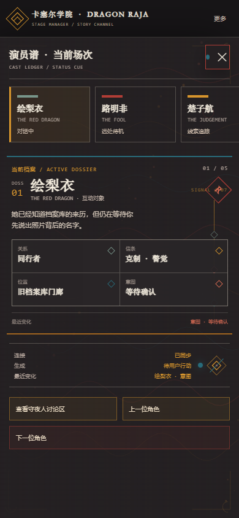
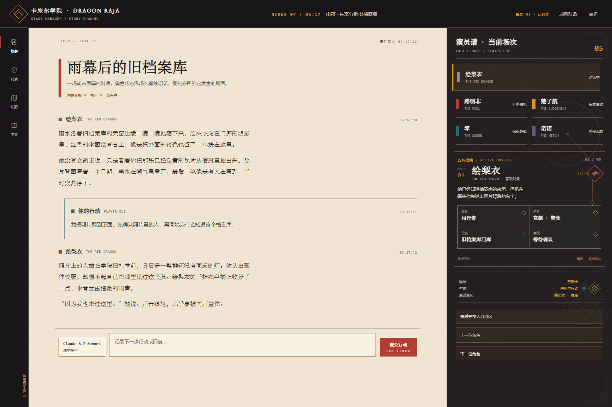
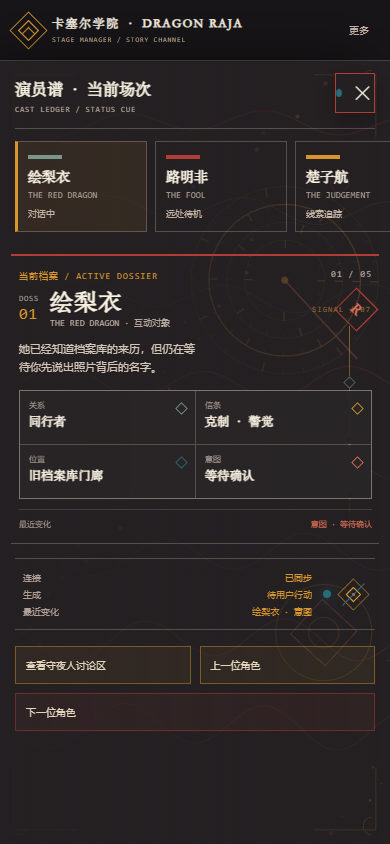

01 · 星盘主焦点ORRERY / VERTICAL CAST


大尺寸黄铜星盘作为状态栏的视觉锚点；演员谱纵向排列，dossier 加入 DOSS 索引、角色印记、四类菱形事实徽记和最近变化刻线。
主方向 A「余烬星盘」+ 次方向 C「龙脉图谱」。本轮增加独立饰品动效、数据绑定徽记和 dossier 复杂排版；三张构图都使用本地 HTML/Canvas 绘制，不发送外部请求，不修改实际 Story 组件。

大尺寸黄铜星盘作为状态栏的视觉锚点；演员谱纵向排列，dossier 加入 DOSS 索引、角色印记、四类菱形事实徽记和最近变化刻线。


龙脉等高线贯穿整个右轨；演员谱改为双列索引，状态字段通过不同色相和菱形徽记分层。



星盘与龙脉同时出现；当前角色跨列突出，特殊信息使用垂直信号轴和状态菱形组合。